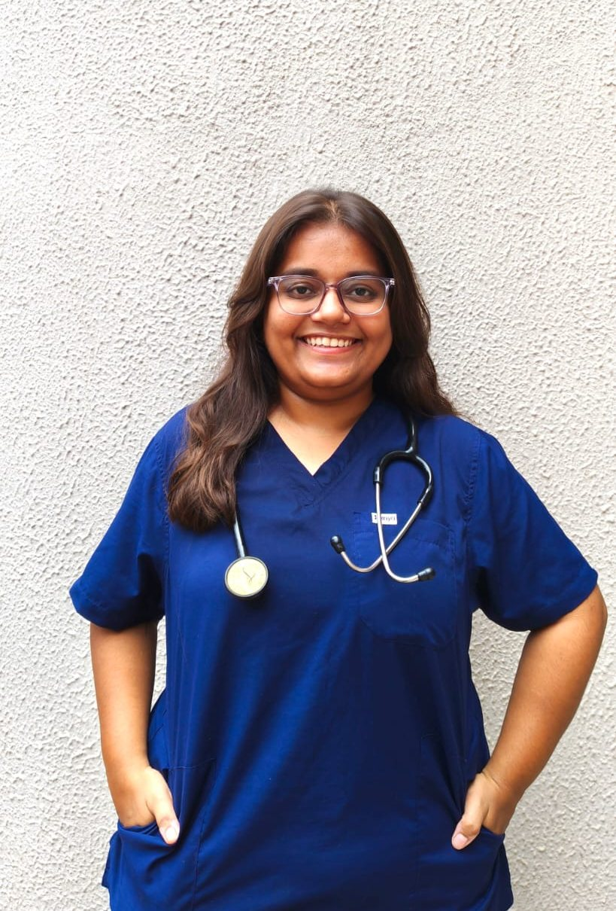
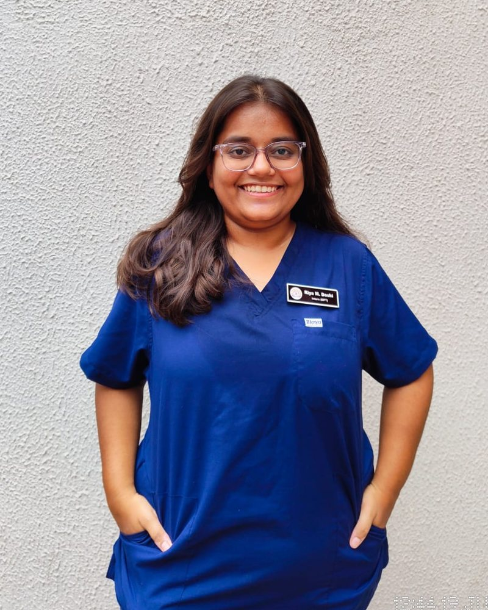
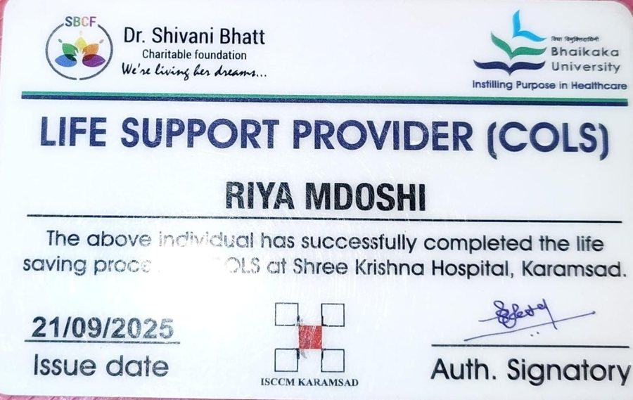

Physiotherapy sessions at home in Surat, and online across the world
I'm Riya Shah, a physiotherapist trained at B.N. Patel College of Physiotherapy. I help people recover from pain, injury and surgery with a clear assessment and an exercise plan you can actually follow.
Bachelor of PhysiotherapySardar Patel University, 2025
Certified Life Support ProviderCOLS, Shree Krishna Hospital
English, Hindi, GujaratiSessions in your language

Surat--:-- IST
Your time--:--
Online times are agreed in your time zone.
What I treat
Every plan starts with an assessment of how you move, what hurts and what you want to get back to. Most conditions can be treated at home in Surat or guided online.
Home visit in Surat
Online session
Back, neck and joint pain
HomeOnline
Treatment for pain that keeps coming back, stiffness from desk work, and joints that limit everyday movement.
Lower back pain, sciatica, neck and shoulder pain, frozen shoulder, knee pain, osteoarthritis, posture-related pain.
Sports injuries and fitness rehab
HomeOnline
Getting you back to running, the gym or your sport with strength work that protects the injured area.
Ankle and knee sprains, muscle strains, tendon pain, runner's knee, tennis and golfer's elbow.
Recovery after surgery
HomeOnline
Early mobility and step-by-step strengthening after an operation, following your surgeon's protocol.
Knee and hip replacement, ACL reconstruction, fracture fixation, spine surgery, shoulder repair.
Stroke and neurological rehab
HomeOnline
Work on balance, walking, hand function and independence, with family members shown how to help between sessions.
Breathing exercises and a safe, gradual return to activity after a hospital stay or a heart or lung condition.
After cardiac surgery, after ICU or hospital admission, COPD, post-COVID breathlessness.
Children and older adults
Home
Gentle, hands-on sessions at home for children's motor development and for older adults who want to stay steady and independent.
Delayed milestones, cerebral palsy, fall prevention, weakness after illness, mobility for daily tasks.
Two ways to see me
Same assessment, same care. Choose what fits where you live.
Home visits in Surat
I come to you with the equipment needed, so you don't travel while you're in pain or recovering.
Adajan, Vesu, Piplod, Athwa, Pal, City Light, Ghod Dod Road and nearby areas
Useful after surgery, for older patients and for stroke rehab
Family members can join and learn the exercises
Not sure if I cover your area? Mention it when you book and I'll confirm.
Online sessions in the UK and Europe
A live video session where I watch how you move, explain what's going on and build your plan with you.
Video call on WhatsApp or Google Meet
You need a phone or laptop and about two metres of floor space
A written exercise plan with photos is sent after each session
Times arranged in your local time, including evenings and weekends
Suits ongoing pain, sports injuries, post-surgery exercise and second opinions.
What happens in your first session
Plan around 45 to 60 minutes. Wear clothes you can move in.
We talk
Your symptoms, history, any scans or surgery notes, and what you want to be able to do again.
Assessment
I check movement, strength, posture and the specific tests for your problem.
Treatment and plan
Hands-on treatment where it helps, then a short set of exercises you can do on your own.
Review
We agree how often to meet and check progress against clear goals at each visit.

About Dr. Riya Doshi
I completed my Bachelor of Physiotherapy at B.N. Patel College of Physiotherapy, Sardar Patel University, in 2025, with clinical training across multi-specialty hospitals in Gujarat.
My internships covered both outpatient and inpatient care. In outpatients I assessed musculoskeletal, neurological, paediatric and cardiac patients and wrote their exercise programmes. On the wards I worked with patients in ICU, orthopaedics, neurology and general medicine, focusing on getting people moving safely after surgery and illness.
I keep sessions practical. You'll know what is causing your problem, what we're working on, and what to do between visits.
Education
Bachelor of Physiotherapy (BPT)B.N. Patel College of Physiotherapy, Sardar Patel University, 2021 to 2025
Outpatient training
OPD rotationsMusculoskeletal, neurological, paediatric and cardiac assessment, exercise prescription and patient education
Inpatient training
IPD rotationsICU, orthopaedic, neurology and general wards: acute care, early rehabilitation and post-operative mobility
Certification
Certified Life Support Provider (COLS)Dr. Shivani Bhatt Charitable Foundation and Shree Krishna Hospital, Karamsad, September 2025

COLS certificateIssued 21/09/2025 at Shree Krishna Hospital, Karamsad.
Yes. I visit patients at home across Surat, including Adajan, Vesu, Piplod, Athwa, Pal, City Light and nearby areas. Share your area when you book and I'll confirm.
Can I have physiotherapy online from the UK or Europe?
Yes. Online sessions run over video call. I assess how you move, explain what's going on and send you a written exercise plan. We agree a time in your local time zone.
How long is a session?
The first session usually takes 45 to 60 minutes because it includes a full assessment. Follow-ups usually take 30 to 45 minutes.
Do I need a doctor's referral?
No referral is needed to book. If you have recent scans, reports or your surgeon's notes, keep them ready for the first session.
How much does a session cost?
Fees depend on whether it's a home visit or an online session. I'll share the fee on WhatsApp when we confirm your time, before anything is booked.
How do I book?
Fill in the short form with your name, phone number and the service you need. It opens WhatsApp with your details ready to send, and I reply to confirm a time.
Book a session
Send your details and I'll reply on WhatsApp to confirm a time, usually the same day.